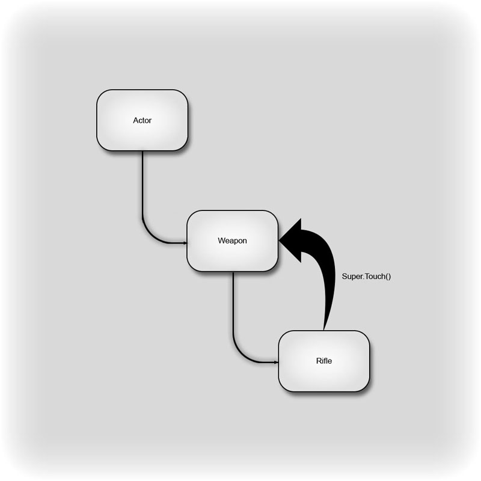
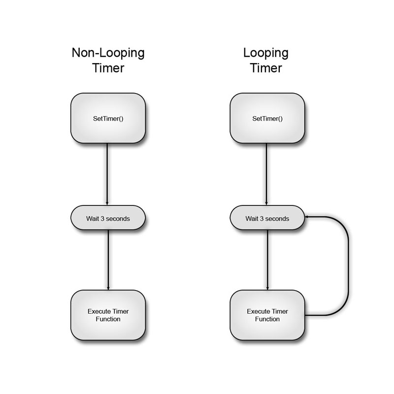

UDN
Search public documentation:
MasteringUnrealScriptFunctions
日本語訳
中国翻译
한국어
Interested in the Unreal Engine?
Visit the Unreal Technology site.
Looking for jobs and company info?
Check out the Epic games site.
Questions about support via UDN?
Contact the UDN Staff
中国翻译
한국어
Interested in the Unreal Engine?
Visit the Unreal Technology site.
Looking for jobs and company info?
Check out the Epic games site.
Questions about support via UDN?
Contact the UDN Staff
- CHAPTER 6 – FUNCTIONS
- 6.1 OVERVIEW
- TUTORIAL 6.1 AMBIENT CREATURE, PART I: BASE CLASS DECLARATIONS
- TUTORIAL 6.2 AMBIENT CREATURE, PART II: CLASS VARIABLE DECLARATIONS
- TUTORIAL 6.3 AMBIENT CREATURE, PART III: RENDERING AND LIGHTING COMPONENTS
- TUTORIAL 6.4 AMBIENT CREATURE, PART IV: COLLISION AND PHYSICS PROPERTIES
- 6.2 FUNCTION DECLARATIONS
- TUTORIAL 6.5 AMBIENT CREATURE, PART V: SETRANDDEST() FUNCTION
- 6.3 FUNCTION SPECIFIERS
- 6.4 RETURN VALUES
- TUTORIAL 6.6 AMBIENT CREATURE, PART VI: SETDEST() FUNCTION
- 6.6 FUNCTION OVERRIDING
- 6.7 THE SUPER KEYWORD
- TUTORIAL 6.7 AMBIENT CREATURE, PART VII: POSTBEGINPLAY() FUNCTION
- TUTORIAL 6.8 AMBIENT CREATURE, PART VIII: TICK() FUNCTION
- 6.8 TIMER FUNCTIONS
- TUTORIAL 6.9 AMBIENT CREATURE, PART IX: SETRANDDEST TIMER
- TUTORIAL 6.10 AMBIENT FISH, PART I: CLASS SETUP
- TUTORIAL 6.11 AMBIENT FISH, PART II: DEFAULTPROPERTIES
- TUTORIAL 6.12 AMBIENT FISH, PART III: POSTBEGINPLAY() FUNCTION
- TUTORIAL 6.13 AMBIENT FISH, PART IV: SETRANDDEST() FUNCTION
- TUTORIAL 6.14 AMBIENT FISH, PART V: TICK() FUNCTION
- 6.9 BUILT-IN FUNCTIONS
- MATH
- Rand(Int Max)/FRand()
- Min(Int A, Int B)/FMin(Float A, Float B)
- Max(Int A, Int B)/FMax(Float A, FloatB)
- Clamp(Int V, Int A, Int B)/FClamp(Float V, Float A, Float B)
- RandRange(Float InMin, Float InMax)
- VSize(Vector A)
- Normal(Vector A)
- MirrorVectorByNormal(Vector InVect, Vector InNormal)
- FloatToByte(Float inputFloat, Optional Bool bSigned)
- ByteToFloat(Byte inputByte, Optional Bool bSigned)
- STRING
- Len(Coerce String S)
- InStr(Coerce String S, Coerce String T)
- Mid(Coerce String S, Int i, Optional Int j)
- Left(Coerce String S, Int i)
- Right(Coerce String S, Int i)
- Divide(Coerce String Src, String Divider, Out String LeftPart, Out String RightPart)
- Split(Coerce String Src, String Divider, Out Array Parts)
- Repl(Coerce String Src, Coerce String Match, Coerce String With, Optional Bool bCaseSensitive)
- MISCELLANEOUS
- MATH
- 6.10 SUMMARY
- Supplemental Files
CHAPTER 6 – FUNCTIONS
In this chapter, the ability of classes to perform actions through the use of functions will be discussed. Besides variable declarations and setting default properties for those variables, virtually all of the code belonging to a class is contained within functions. This makes functions absolutely necessary in order to have classes, and therefore programs, which actually do anything interesting. Once you have a firm grasp on what functions are and how they work, it will become possible to create extremely useful classes which translate into exciting in-game experiences.6.1 OVERVIEW
So, what exactly is a function? A function is a named container for a subset of commands within a class that performs a specific task. By bundling related lines of code up into named units, programs become much more organized and it becomes much easier to execute commonly used code. Instead of having to write out the code each time it needs to be executed, the function can be called by its name and the code associated with that function will be executed. Once the code for that function is finished executing, the program continues on from where the function call occurred. In order to make functions more flexible, functions also have the ability to take in information in the form of parameters and can output a value as well. By allowing the function to communicate with the rest of the program, actors within the game have the ability to give commands and talk to one another. The data from one class can be operated on by the function of another class and the result can be returned to the original class. Without this communicative ability, functions would be far less dynamic and, therefore, much less useful. As you learned in Chapter 4: Variables, special variables called local variables can be declared within functions for use within that function. This allows functions to create data that can be used and manipulated. This data only exists while the function is being executed, though. It is not accessible anywhere else other than inside of the function and it does not persist between executions of the function. When the function begins executing, it reads the local variable declarations and creates these variables. During execution, any modifications can be performed as though these were regular variables. When the function finishes, all its local variables are destroyed. Note: Local variable declarations must occur before all other code within a function. If any code is placed before a local variable declaration, an error will occur when compiling the script.TUTORIAL 6.1 AMBIENT CREATURE, PART I: BASE CLASS DECLARATIONS
Over the course of the tutorials in this chapter, you will be creating the classes necessary to implement some fairly simple ambient creatures that can be placed in maps to provide a more believable environment for the player. We will be focusing on the creation of a single type of fish, but through the use of object-orientation, adding other types of fish and even other types of creatures will be extremely simple. We will begin by setting up the base AmbientCreature class which will contain generalized functionality. In essence, this class will handle the selection of a location to move to and then set the creature moving toward that location. We are also going to create an AmbientCreatureNode class that will mark the locations from which the creatures can choose a new destination.Figure 6.1 – The AmbientCreatureNode is used as a locator for the AmbientCreature’s path. 1. Open ConTEXT and create a new file by choosing New from the File menu or pressing the New File button in the toolbar. Make sure to select the UnrealScript highlighter as well.
Figure 6.2 – Create a new UnrealScript document. 2. As stated above the name of the base class for our ambient creatures will be called AmbientCreature. This class is going to inherit from the Actor class. On the first line of the script, declare this class by typing the following:
class AmbientCreature extends Actor;3. There will be a lot more code added to this class, but for now we are simply going to save the script so we can go ahead and create the AmbientCreatureNode class as it will be needed when declaring the class variables for the AmbientCreature class. Choose Save As from the File menu and navigate to the MasterinUnrealScript/Classes directory created in the previous tutorials. Save the file to this location with the name AmbientCreature.uc to match the name of the class in the declaration.
Figure 6.3 – Save the AmbientCreature.uc script. 4. Create another new file in ConTEXT from the File menu or the toolbar and select the UnrealScript highlighter. 5. On the first line of the new file, declare the AmbientCreatureNode class. Unlike the AmbientCreature class, this class will not be extending the Actor class. In order to easily make this class have an icon in UnrealEd, we are going to inherit from the Info class. Without an icon, it would be very difficult to quickly see where the nodes were being placed making the level designer’s job very difficult. Add the code below to declare the class.
class AmbientCreatureNode extends Info placeable;6. Add one variable declaration for this new class. This variable will be a Float and will be called Radius. This value will allow the designer to specify a radius around this node which will be used to give the creatures a little more variation in their movement. var Float Radius; 7. You may have noticed the Radius variable was not declared as editable. We are going to give the designer a way to visualize and set this radius in the editor as well by using a DrawSphereComponent. Add the following declaration to add the DrawSpereComponent to the node class:
var() Const EditConst DrawSphereComponent RadiusComponent;8. Set a default value for this Radius variable by adding the defaultproperties block shown below:
defaultproperties
{
Radius=128
}
9. In the defaultproperties block, add the following lines of code to create the DrawSpereComponent and attach it to the node.
Begin Object Class=DrawSphereComponent Name=DrawSphere0 SphereColor=(B=255,G=70,R=64,A=255) SphereRadius=128.000000 End Object RadiusComponent=DrawSphere0 Components.Add(DrawSphere0);10. The last step is to set the Radius property of the node equal to the radius of the DrawSpereComponent at runtime since the designer only has access to the DrawSpereComponent in the editor. We will do this by overriding the PreBeginPlay() function.
function PreBeginPlay()
{
Radius = RadiusComponent.SphereRadius;
Super.PreBeginPlay();
}
11. Choose Save As from the File menu and again navigate to the MasteringUnrealScript/Classes directory. Save the file to this location with the name AmbientCreatureNode.uc to match the name of the class in the declaration.

Figure 6.4 – Save the AmbientCreatureNode.uc script. With this little bit of setup completed, we can begin putting together the base creature class in the next tutorial. <<<< End of Tutorial >>>>
TUTORIAL 6.2 AMBIENT CREATURE, PART II: CLASS VARIABLE DECLARATIONS
There are a number of variables that will be common to all creatures that we can go ahead and add in the base AmbientCreature class. In this tutorial, we will be creating all the declarations for the variables. 1. Open ConTEXT and open the AmbientCreature.uc file if it is not already open. 2. Press the Enter key a couple times to move down a few lines from the class declaration. 3. Remember we set up a class in the previous tutorial that will serve as location markers for destinations for our creatures. We need a way to store those in the creature class in order to select one as a destination. We will be using a dynamic array for this purpose as we do not know how many nodes there will be in any given situation. We also want to allow the designer to add the nodes to this property so that any individual creature can be given specific nodes to use as potential destinations. Type the following code to declare the MyNodes variable that will hold the AmbientCreatureNodes associated with this creature.var() array<AmbientCreatureNode> MyNodes;4. If the creatures simply move from one destination to the next, at some point the behavior will begin to look repetitive and predictable. In order to keep this from happening, we are going to institute a minimum and maximum amount of time that the creatures will move in any one direction. This should result in a more random movement pattern. We will use float values for these variables as well. Add this line of code below the MoveDistance variable declaration:
var float MinTravelTime,MaxTravelTime;You will notice we declared both variables with a single line of code. Since these variables are associated with each other, we are keeping them together for organizational purposes. 5. Unreal will use the Velocity variable inherited from the Actor class of the creature to determine the direction and speed at which the creatures move. This means we need to have the direction and speed of movement if we are to set this Velocity variable to cause the creatures to move where we want. As you will see later, the direction will only be used a single time to set the desired rotation of the creature. The physics engine will then cause the creature to begin to rotate towards the destination. We will use the direction the creature is facing at any time as the direction of movement and simply multiply that by the speed. What this means is that the direction can be a local variable since it is calculated, used, and discarded. The speed will need to be used several times throughout the creature class, however; so we will need a variable to hold this value. On the next line of the script, enter the following:
var Float Speed;6. Creatures come in all sizes so it would be silly to have our creatures all be the same size. In order to allow each type of creature to specify its own minimum and maximum sizes, we will declare variables for these values and let each child class set values for them. These values will be used to calculate the random scale of each instance of the creature. Add the declaration below on the line following the Speed declaration:
var Float MinSize,MaxSize;7. We now have the variables we need for the base creature class. Save the file to preserve your work. <<<< End of Tutorial >>>>
TUTORIAL 6.3 AMBIENT CREATURE, PART III: RENDERING AND LIGHTING COMPONENTS
The last piece of setup before we jump into the main functionality of the creature class is the default properties. We need to make sure the creature has the appropriate type of physics, collision settings, and a means of displaying a mesh and being lit properly. To begin with, we will focus on the rendering and lighting setup. 1. Open ConTEXT and the AmbientCreature.uc file if it is not already open. 2. The first step is to open the defaultproperties block. Press the Enter key a few times to make some space below the variable declarations. Open the defaultproperties block by adding the following lines of code:
default properties
{
3. Since these are moving objects, they will need to be lit dynamically. We are going to make use of a DynamicLightEnvironment to keep the cost of lighting the creatures to a minimum. To do this we will need to create a sub-object in the defaultproperties block and add it to the Components array of the creature. As we saw in the previous chapter, the creation of a sub-object in the default properties requires the use of the Begin Object syntax followed by a class and a name for the new sub-object. To terminate the creation of the sub-object we will use the End Object syntax.
Press the Enter key to move to the next line down and then press the Tab key to indent this section of code. Enter the code below to create the DynamicLightEnvironment.
Begin Object Class=DynamicLightEnvironmentComponent Name=MyLightEnvironment End Object4. With the DynamicLightEnvironment created, we need to assign it the Components array. Any time you make use of some type of component, it will need to be assigned to the Components array in order to have any effect. Add this line of code below the code creating the DynamicLightEnvironment:
Components(0)=MyLightEnvironmentWe simply use the name of the sub-object that was created previously and assign it to the first element of the Components Array. 5. We are going to use a static mesh as the display mesh for our creatures to avoid dealing with animation for now. Just as with the DynamicLightEnvironment, this requires creating a sub-object and assigning it to the Components array. On the next line of the script place this code:
Begin Object Class=StaticMeshComponent Name=MyStaticMeshBefore ending the sub-object, we need to set one property this time. We need to also tell this StaticMeshComponent to use the DynamicLightEnvironment we created previously. Indent the next line and add the following line of ocde:
LightEnvironment=MyLightEnvironmentFinally, end the sub-object:
End Object6. Now we must add this component to the Components array as well. Enter the following code on the next line of the script:
Components(1)=MyStaticMesh7. Save the script to preserve your work. <<<< End of Tutorial >>>>
TUTORIAL 6.4 AMBIENT CREATURE, PART IV: COLLISION AND PHYSICS PROPERTIES
Continuing with the default properties of the base creature class, we will now set up the properties for collision and physics. 1. Open ConTEXT and the AmbientCreature.uc file if it is not already open. 2. The first thing we need to do is set the CollisionComponents property inherited from the Actor class to determine what to use as the collision geometry. This tells the engine what to use when calculating whether a collision has occurred. We are simply going to use the StaticMeshComponent we created previously which should have a simplified collision mesh set up. Below the last line of code in the file, add the following:CollisionComponent=MyStaticMesh3. With the CollisionComponent set telling the engine what geometry to use for calculating collisions, we need to tell the engine what types of other geometry the creatures should collide with. We don’t want them to collide or block other actors as these are ambient creatures. We do want the creatures to collide with the world, though. In the case of our fish creatures, this means they will not collide with each other. However, if the fish are in a tank or a pond, they will be bound by the geometry making up the tank or the pond. To make the creatures collide with the world, we simply need to set the bCollideWorld property by adding the lone of code below.
bCollideWorld=True4. That takes care of the collision properties, but we still need to set up the physics for the creatures. We are going to use the PHYS_Projectile physics type as it allows us to simply set a velocity and a rotation and it takes care of the rest. On the next line of the script, add the following line of code:
Physics=PHYS_Projectile5. The last two properties that we need to set are to tell the engine that this actor is going to be moving around in the world. There are two properties that need to be set in order to do this, bStatic and bMovable. Add the lines of code below to the end of the script:
bStatic=False bMovable=True6. Close off the defaultproperties block by adding this line:
}The script at this point should appear like so:
class AmbientCreature extends Actor;
var() array<AmbientCreatureNode> MyNodes;
var float MinTravelTime,MaxTravelTime;
var float Speed;
var float MinSize,MaxSize;
defaultproperties
{
Begin Object Class=DynamicLightEnvironmentComponent Name=MyLightEnvironment
End Object
Components(0)=MyLightEnvironment
Begin Object Class=StaticMeshComponent Name=MyStaticMesh
LightEnvironment=MyLightEnvironment
End Object
Components(1)=MyStaticMesh
CollisionComponent=MyStaticMesh;
bCollideWorld=true
Physics=PHYS_Projectile
bStatic=False
bMovable=True
}
7. Save the file to preserve your work.
<<<< End of Tutorial >>>>
6.2 FUNCTION DECLARATIONS
So, how do you declare a function? Just as class or variable declarations use the class or var keywords to inform the compiler of a declaration, a function declaration uses the function keyword. If the function is to output some data, the type of data the function returns follows the function keyword. After that comes the name of the function followed by a set of parentheses containing any parameters, or inputs, the function may have. If no data needs to be taken in by the function, the parentheses can be empty. The last part of a function declaration is a set of curly braces containing the code that is executed when the function is called. A simple example of a function declaration is provided below.
Function Int Clamp(Int Value, Int Min, Int Max)
{
if( Value < Min)
Value = Min;
else if( Value > Max)
Value = Max;
return Value;
}
You can see the function keyword begins the declaration and is followed by the Int term stating that this function will return a value in the form of an integer. The name of this function is Clamp and it takes in three integer values: Value, Min, and Max. Finally, the code that is to be executed when the function is called can be found within the curly braces. As you may be able to tell, this code clamps the value of the first input to the range determined by the second and third inputs and returns the resulting clamped value.
TUTORIAL 6.5 AMBIENT CREATURE, PART V: SETRANDDEST() FUNCTION
It is time to dive into the meat of the base creature class now. Before we begin, we should examine what it is the creature needs to do. Here is a basic list of the actions that must be taken to move from one point to another:- Select a node as the new destination
- Calculate the direction of travel from the current location to the destination
- Set the desired rotation to point the creature towards the destination
- Set the velocity based on the direction of travel and speed of the creature
function SetRandDest()Now place opening and closing curly braces below that line of code like so:
{
}
Finally, place the cursor after the opening curly brace, press the Enter key and then the Tab key to indent the code within the function.
3. The first action on our list is to select a node as the new destination. We want this node to be randomly selected as well. To do this we need a random integer value we can use as an index into the MyNodes array. First, we will get the random index and store it in a local variable. Declare a local Integer variable named Idx by typing the code below:
local Int Idx;Now we will use the Rand() function which all classes have access to. This will return a random integer value from 0 to one less than the value passed to the function. This means if we type Rand(5), we should get a get a value from 0 to 4. This will work very well for our purposes as we can use the Length property of a dynamic array to get the number of elements contained in the MyNodes array and then use that value with the Rand() function to get a random index into the array. Press the Enter key a couple times and then add the following line of code:
Idx = Rand(MyNodes.Length);4. Now that we have a random index, we can use it to select a node from the MyNodes array. We will need another local variable in which to store the result so we will declare another local variable in the SetRandDest() function. On the line following the Idx variable’s declaration, place the line of code shown below:
local AmbientCreatureNode DestNode;We need to use the Idx variable to access the MyNodes array and assign the selected node to the DestNode variable. Place the following line of code below the line setting the value of the Idx variable:
DestNode = MyNodes[Idx];The SetRandDest() function should appear as follows up to this point:
function SetRandDest()
{
local Int Idx;
local AmbientCreatureNode DestNode;
Idx = Rand(MyNodes.Length);
DestNode = MyNodes[Idx];
}
5. Now that we have a node selected, we need to calculate the direction the creature must travel in order to reach that node. To calculate the direction from one location to another, you simply need to subtract the first location from the second. In this case, that means subtracting the creature’s current Location from the Location of the node we selected as the destination.
Before we do this calculation, we need a variable to store the result in. The Location variable, which holds the current position in world space of any Actor, is a Vector. So, we need this local variable to be a Vector as well. After the declaration of the DestNode variable, add the declaration below:
local Vector MoveDirection;This will create a Vector variable named MoveDirection which we can use to hold the direction from the creature to the node. 6. Below the line where the value of the DestNode variable is set, we will perform the calculation to determine the direction of travel and assign the result to the MoveDirection variable. Add the following line of code to the SetRandDest() function:
MoveDirection = DestNode.Location – Location;
Figure 6.5 – The path to the new destination is calculated 7. Since we are going to be causing the creature to move in a new direction, it makes sense that we should also rotate the creature to face the direction it is going to be traveling. We can do this by setting the DesiredRotation property of the creature. Once set, the physics engine will smoothly rotate the creature towards the new rotation according to the rate of rotation specified by the RotationRate property. The only part of this we need to worry about at this point is setting the DesiredRotation property. It may not be immediately obvious, but we already have all the information needed to set this property. Since we have the vector representing the direction we want the creature to face, the MoveDirection vector, we can simply cast this Vector to a Rotator in order to convert it to the value we will assign to the DesiredRotation property. On the next line of the script, add this line of code:
DesiredRotation = Rotator(MoveDirection);

Figure 6.6 – The creature rotates to face the new destination 8. Now we need to set the Velocity variable of the creature to tell it to move. This variable is a Vector whose length determines its actual speed. Since we want to be able to control the speed using our own Speed variable, we needed the vector determining the direction of travel to have a length of 1. This way, we can multiply it by the Speed variable and assign the result to the Velocity variable to cause the creature to move toward the node with the speed specified in the Speed variable. On the next line, add the code below to set the Velocity property:
Velocity = Normal(MoveDirection) * Speed;You should have noticed that we used a function called Normal() in the code above. This function takes in a vector and outputs the unit vector, or vector with a length of 1 unit, in the same direction. This is important as we only want the MoveDirection variable to hold the directional information and not any magnitude information. The SetRandDest() function should now appear as follows:
function SetRandDest()
{
local Int Idx;
local AmbientCreatureNode DestNode;
local Vector MoveDirection;
Idx = Rand(MyNodes.Length);
DestNode = MyNodes[Idx];
MoveDirection= DestNode.Location – Location;
DesiredRotation = Rotator(MoveDirection);
Velocity = Normal(MoveDirection) * Speed;
}
9. Save the file to preserve your progress.
We now have a completed SetRandDest() function that can be called at any time to select a new destination at random and set the creature moving toward that destination.
<<<< End of Tutorial >>>>
6.3 FUNCTION SPECIFIERS
Just as Classes and Variables have a set of keywords used in their declarations to tell the compiler how they should be handled, functions have specifiers of their own. Unless otherwise specified in the descriptions below, these specifiers precede the function keyword in the function declaration.Static
This specifier is used to create a function which can be called from any other class without the need for an object reference variable of the class containing the function, similar to a global function. Because there is no guarantee of there being an instance of the class containing the function, calls to non-static function cannot be made from within a static function and they cannot contain variables from the class containing the function. These functions can be overridden in subclasses.Native
This specifier declares a function as being defined in native code (C++), but allows it to be called from within UnrealScript. Since this book deals with UnrealScript, there will be no reason to use this keyword, but you will see it often when perusing the scripts.Final
This specifier disables the ability of a function to be overridden in a child class. Declaring a function as Final comes with a slight performance increase, but should only be used if you are positive you will never need to override the function. This specifier should be placed immediately before the function keyword in the function declaration. See 6.6 Function Overriding for more information on overriding functions.Singular
This specifier causes the function to disallow being called recursively, meaning that a call to the function cannot be done from within the same function.NoExport
This specifier prevents the C++ declaration for a native function from being created.Exec
This specifier declares this function as being able to be called during the game directly from the console by typing its name and any parameters it accepts. Exec functions can only be used within certain classes.Latent
This specifier indicates that the function may run in the background while the game progresses. A latent function can only be called from within state code, which will be discussed in detail in Chapter 11: States. This specifier is only valid when used with native functions.Iterator
This specifier determines that the function can be used with the Foreach command to cycle through a list of actors.Simulated
This specifier means that this function may be executed client-side, but only when the actor owning the function is a simulated proxy or automous proxy.Server
The specifier causes the function to be sent to the server to be executed.Client
The specifier causes the function to be sent to the client to be executed. Using the Client specifier implies that the function is Simulated as well.Reliable
This specifier deals with replication across a network and is used in conjunction with the Server or Client specifiers. A Reliable function is guaranteed to be replicated in order with respect to other replicated items within the actor.Unreliable
This specifier deals with replication across a network and is used in conjunction with the Server or Client specifiers. An Unreliable function is not guaranteed to be replicated in order with respect to other replicated items within the Actor and has the possibility of not being replicated at all if bandwidth over the network is not sufficient.Private
This specifier causes the function to only be accessible from within the class in which it was declared. Subclasses will technically contain this function, but will have no way of directly using it. It is, however, possible it could be called indirectly if the subclass calls the parent class’s version of some non-private function which in turn calls the private function. A private function cannot be called through the use of an object reference variable from another class.Protected
This specifier causes the function to only be accessible from within the class in which it was declared or a subclass thereof. Subclasses will contain a protected function and can call it directly, but it cannot be called through the use of an object reference variable from another class.Event
This specifier is used in place of the function keyword when declaring a function to create a function in UnrealScript that can also be called from native code As it pertains to native code, it is beyond the scope of this book, but you will encounter it quite often when viewing Unreal’s scripts.Const
This specifier is used only with native functions and causes the function to be defined as const in the automatically generated C++ header. This specifier follows the parameter list in the function declaration.6.4 RETURN VALUES
It has been mentioned several times that functions can output a value. This is called the return value because the value in question is returned to the location from which the function was originally called. How does the function know what value to return, though? The Return keyword informs the function that it should stop executing and anything following the keyword should be returned. This can take the form of a simple value, a variable, or an expression. When the value is in the form of a variable, the current value of that variable will be returned. In the case of an expression, the result after evaluating the expression is the value that will be returned. Note: The Return keyword can be used by itself to stop execution of a function which does not return a value. This can be useful if there is some specific situation where you do not want the function to execute. Using an extremely simple example, we can take a look at just how this works. The following function does nothing more than return a value of 1.
function Int ReturnOne()
{
return 1;
}
This function could then be used to set the value of an Int variable like so.
var Int MyInt; … MyInt = ReturnOne();After executing this line of code, the value of MyInt will be equal to 1 because the call to ReturnOne() returned a value of 1. In essence, after executing the function, the line of code would look like this:
MyInt = 1;The function call is executed first and then the rest of the line of code is evaluated. This example is very simple, but return values can be extremely useful in more complex situations. Sometimes a function call will actually fall in the middle of a string of dot notation such as:
OnlineSub.GameInterface.GetGameSettings().bUsesArbitrationWhat the variables you are seeing in this line of code represent are not really important. What is important is that you see that a function call is essentially being used like a variable in this line of code. If we break it down into parts it will be more evident what is occurring.
OnlineSub.GameInterface.GetGameSettings()This first part of the string of dot notation evaluates to an OnlineGameSettings object because that is what the GetGameSettings() function returns. So, what this code says is “return the OnlineGameSettings object belonging to the GameInterface object which belongs to the OnlineSub object.” After evaluating this part, the line could in theory be simplified to read:
OnlineGameSettings.bUsesArbitrationNow we are simply referring to the bUsesAbritration variable belonging to an OnlineGameSettings object which is much easier to conceptualize. You might be wondering why not just refer directly to an OnlineGameSettings variable in the first place and avoid the function call. The reason is that providing a variable or allowing direct access to certain variables is not always a good idea as improperly modifying them can have severe adverse effects. Functions are created to return references to these objects in order to keep everything running smoothly.
6.5 FUNCTION PARAMETERS
Functions have the ability to be passed values, or have information sent to them, when they are called. These values can be of any type and can then be used within the function. Often, the values passed to a function will be in the form of variables. Unless specified otherwise, when a variable is passed to a function as a parameter, a copy of the variable is created and any modifications made to the variable within the function will only affect the copy. In order to see how passing parameters to functions works, we can look at an example. The following function would be used to clamp one value between two other values. A similar function already exists in Unreal, but this will help demonstrate parameters.
Function Int Clamp(Int Value, Int Min, Int Max)
{
if( Value < Min)
Value = Min;
else if( Value > Max)
Value = Max;
return Value;
}
Say we wanted to clamp the Health of an actor between the values of 0 and 100. The above function could be used in the following manner.
Health = Clamp(Health, 0, 100);This command would execute the Clamp function which would return the clamped value and then assign it to the Health variable. The assigning of the value was necessary because the function is only working with a copy of the Health variable and not directly modifying it. As you will see in the next section, it is possible to force a function to directly manipulate a variable passed in as a parameter.
FUNCTION PARAMETER SPECIFIERS
The function parameter specifiers are a special set of variable specifiers that are only relevant to function parameters.Out
When a parameter is declared using the Out specifier, the variable passed to the function will be directly modified by the function instead of creating a copy to work with. This essentially allows a function to return more than one value. To show the difference when using the Out specifier, let’s use the previous example of the Clamp() function only this time the Out speciifer will be used and the function will not return a value.
Function Clamp(Out Int Value, Int Min, Int Max)
{
if( Value < Min)
Value = Min;
else if( Value > Max)
Value = Max;
}
Again, we want to clamp the Health of an actor between the values of 0 and 100. The above function could be used in the following manner.
Clamp(Health, 0, 100);Unlike the previous example, all that must be done is call the function with the appropriate parameters. The function takes care of assigning the correct value to the Health variable so no return value is necessary.
Optional
When a parameter is declared using the Optional specifier, the function can be called without passing a value for that parameter. Optional parameters can have default values set that will be used if no value is passed to the function. If no default value is specified and no value is passed to the function, a value of zero (0, 0.0, False, “”, None, etc. depending on the parameter’s type) is used. Defining a default value for an optional parameter is done in the following manner.
Function Clamp(Out Int Value, Optional Int Min = 0, Optional Int Max = 1)
{
if( Value < Min)
Value = Min;
else if( Value > Max)
Value = Max;
}
This declaration defines the value of Min to be 0 and Max to be 1 unless values are passed to the function for these parameters when it is called. Using the same situation as before, we could clamp the Health of the player between 0 and 100 by calling the function with the following parameters.
Clamp(Health,, 100);Notice that the second parameter was omitted as its default value is the same as the value we want to use. We had to pass the value of 100 for the third parameter as its default is 1 which is not what we want. When omitting an optional parameter that is not the final parameter, a space must still be left for that parameter so that the function knows which parameter the next value passed in is for. If the optional parameter is the last parameter, no space need be left and it can be omitted altogether.
Coerce
When a parameter is declared using the Coerce specifier, the value passed to the function for that parameter will be forcibly converted to the parameter’s type regardless of whether UnrealScript would normally perform the conversion. This is most often used with String parameters with the most commonly used example of the Coerce specifier being the `log() function.`log( coerce string Msg, optional bool bCondition=true, optional name LogTag='ScriptLog' );Using the Coerce specifier allows any type of data to be passed in as the Msg parameter and forces it to be converted to a string. This is very useful when debugging a script. You may have an object reference variable that should be holding a specific object. In order to determine if this is the case, passing that variable to the `log() function will output the string representation, or name in this case, of the object to the log file.
TUTORIAL 6.6 AMBIENT CREATURE, PART VI: SETDEST() FUNCTION
In this tutorial, we are going to take the functionality which calculates the MoveDirection, sets the DesiredRotation, and sets the Velocity out of the SetRandDest() function and place it in a separate function. By separating this functionality out, we add the ability to not only pick destinations at random, but we will also be able to set specific destination if necessary. This makes the class much more flexible, which will come in useful in subsequent chapters. 1. Open ConTEXT and the AmbientCreature.uc file if it is not already open. 2. We need to declare the new function which will be populated with the section of code from the SetRandDest() function. A few lines below the SetRandDest() function add the lines of code shown below:
function SetDest(AmbientCreatureNode inNode)
{
}
As you can see, the SetDest() function takes in an AmbientCreatureNode. This will allow a node to be selected at random or a specific node to be selected and then passed to this function.
3. First, we will move the necessary local variable declarations from the SetRandDest() function to the SetDest() function. Out of the three declarations, the only one we are concerned with is the MoveDirection declaration.
Select the line of code in the SetRandDest() function shown below and cut it by pressing Ctrl+X.
local Vector MoveDirection;4. Between the opening and closing curly braces of the SetDest() function, paste the variable declaration by pressing Ctrl+V. The SetDest() function should now appear like so:
function SetDest(AmbientCreatureNode inNode)
{
local Vector MoveDirection;
}
5. Next, select the lines of code responsible for setting the MoveDirection, DesiredRotation, and Velocity variables from the SetRandDest() function and cut them by pressing Ctrl+X. These lines are shown below:
MoveDirection= DestNode.Location – Location; DesiredRotation = Rotator(MoveDirection); Velocity = Normal(MoveDirection) * Speed;6. After the variable declaration in the SetDest() function, paste the lines of code by pressing Ctrl+V. Now change the one instance of DestNode to inNode to match the name of the function’s parameter. The SetDest() function will now appear as follows:
function SetDest(AmbientCreatureNode inNode)
{
local Vector MoveDirection;
MoveDirection= inNode.Location – Location;
DesiredRotation = Rotator(MoveDirection);
Velocity = Normal(MoveDirection) * Speed;
}
7. We are also going to add in some variation to the destination so the creatures are not always moving directly to the location of the node, but a radius around the node. First, add another local Vector named MoveOffset by altering the crrent local variable declaration as follows:
local Vector moveDirection,MoveOffset;8. This MoveOffset variable will be calculated by first obtaining a random Vector and then multiplying it by the preferred radius which is specified by the Radius variable of the destination node. Add the line shown below before the other code in the SetDest() function to perform this calculation:
MoveOffset = Normal(VRand()) * inNode.Radius;9. Then, change the line setting the MoveDirection to make use of the new MoveOffset value like so:
MoveDirection = (inNode.Location + MoveOffset) – Location;

Figure 6.7 – The destination is now within a radius of the node. 10. Now, back in the SetRandDest() function, add the following line of code:
SetDest(DestNode);The finished SetRandDest() function should now consist of the following code:
function SetRandDest()
{
local Int Idx;
local AmbientCreatureNode DestNode;
Idx = Rand(MyNodes.Length);
DestNode = MyNodes[Idx];
SetDest(DestNode);
}
11. Save the file to preserve your progress.
<<<< End of Tutorial >>>>
6.6 FUNCTION OVERRIDING
You now know how to create functions within a class to make that class useful. And, you know that by extending a class, the functions contained within that class are passed on to the subclass. What if you would like the subclass’s version of the function to have some added functionality or even do something completely different? UnrealScript provides the ability for subclasses to override the parent’s version of a function. This means the subclass can have a function by the same name with the same parameters and return value that performs a different action than that of the parent class. This feature is extremely powerful in that it allows you to take advantage of the benefits of inheritance while still allowing the flexibility to differentiate the subclass from the parent when needed. In addition, it is also very easy to implement. All that need be done is copy the parent’s version of the function into the subclass and make any desired changes to the code contained within the function. This tells the compiler that this new version of the function should be used in place of the parent’s version.Figure 6.8 – Each child class’ Draw() function performs a different action than the parent’s function. Let’s take a look at a very simple example common in Unreal Tournament 3 of overriding a function in a subclass. The Touch() function should work well for this example. This function is defined in the Actor class, but provides no functionality. It is essentially a blank function waiting to be overridden with some sort of behavior. By extending from the Actor class and overriding the Touch() function, we will take advantage of all the functionality that exists within the Actor class while extending that functionality to perform some action, such as outputting the names of any actors that touch this actor to the Log file.
class Toucher extends Actor placeable;
event Touch(Actor Other, PrimitiveComponent OtherComp, vector HitLocation, vector HitNormal)
{
`log(Other);
}
The efficiency of inheritance and overriding functions should be immediately apparent from this example. It was only necessary to write a few lines of code in order to create a completely new and fully functional class. The Actor class is over 3000 lines long, but this class gets all that functionality and more from just a few lines of code.
6.7 THE SUPER KEYWORD
By overriding functions in subclasses, the actions performed by inherited functions can be altered. What happens if you want to retain the functionality of the parent’s function while still taking advantage of the ability to override a function to gain new functionality? You may deduce that you could simply include the code from the parent’s version of the function in the subclass’s version of the function, but it certainly wouldn’t be the most efficient solution. UnrealScript uses the Super keyword to allow a subclass to call the parent’s version of a function. In this manner, the subclass can add functionality while keeping all the functionality of each class above it in the hierarchy. The syntax for using the Super keyword to call the Touch() function of a parent class is as follows.Super.Touch();
Figure 6.9 – The Rifle class calls the Weapon class’ Touch() function. In addition, a class name can be specified with the Super keyword to allow a subclass to call a function from a specific class above it in the hierarchy. Say there are three classes, Actor, Weapon, and Rifle, which form a hierarchy where Weapon extends from Actor and Rifle extends from Weapon. Each of the subclasses, Weapon and Rifle, could override the Touch() function from their respective parent class. If the Rifle class wanted to call the Actor class’s version of the Touch() function, it could do so in the following manner.
Super(Actor).Touch();This would skip the Weapon class’s version of the function even though it is the parent of Rifle and go to the Actor Class’s version of the Touch() function.

Figure 6.10 – The Rifle class calls the Actor class’ Touch() function. Note: The parameters were left out of the above function calls for simplicity.
TUTORIAL 6.7 AMBIENT CREATURE, PART VII: POSTBEGINPLAY() FUNCTION
Up to this point, we have added functions to the base creature class to select a random destination and cause the creature to move toward that destination. You may have noticed we have not implemented a method of setting this all into motion yet. We need a way to call the SetRandDest() function when the level begins so the creature will make use of the functionality we have added. This is precisely what we will be doing in this tutorial. At the same time, we will implement the functionality for setting a random size for each individual creature as well as some variance in the Speed and RotationRate. 1. Open ConTEXT and the AmbientCreature.uc file if it is not already open. 2. We are going to make use of the PostBeginPlay() function which is called by the engine on each Actor after the level begins. Overriding this function will provide an ideal place to set the size, speed, and rotation rates for the creatures as well as initiating the creature’s movement. Although the placement of the functions within the class is not important, we are going to place the PostBeginPlay() function just after the class variable declarations. This will make the functions within the class flow in the order of execution. Between the declarations of the class variables and the SetRandDest() function, create some space and add the declaration for the PostBeginPlay() function as shown below.
function PostBeginPlay()
{
}
3. The first thing we want to do when overriding this function is make sure that the parent version gets executed by calling it using the Super keyword. This will ensure that any general setup actions get performed in addition to the functionality we are going to be adding. Between the curly braces, call the parent veriosn of the PostBeginPlay() function by adding the line below.
Super.PostBeginPlay();4. When we declared the class variables, you may remember that we declared two variables that were to be used as minimum and maximum values for the size of each creature. We are going to use those values with a function called RandRange() to get a random value. Then we will use that random value with another function called SetDrawScale() to set the size of the creature. On the next line in the PostBeginPlay() function add this line of code:
SetDrawScale(RandRange(MinSize,MaxSize));You’ll notice we were able to do this all in one line of code. This is because the RandRange() function returns a Float value while the SetDrawScale() function takes in a Float value as a parameter. So we can use the call to one as the parameter of the other and everything works out perfectly with no need for any extraneous local variables.
Figure 6.11 – The size of each creature is chosen at random from a range of sizes. 5. We want to give the Speed and RotationRate properties some variation from one creature to the next. These two properties correlate to each other, though. This means that creatures with higher speeds need higher rotation rates as well. We are going to handle this by using the same randRange() function used in the previous step, but this time we will store the value in a local variable so we can multiply both the Speed and RotationRate variables by the same random value. Move the existing lines of code in the PostBeginPlay() function down a few lines and then declare a Float variable named RandVal by adding the code below:
local Float RandVal;Now we will set the value of the RandVal function by selecting a random value between 0.5 and 1.5. Essentially, this will give us a deviation of 0.5 from the default values of the Speed and RotationRate variables. After the last line of code in the PostbeginPlay() function, add the line of code shown below:
RandVal = RandRange(0.5,1.5);6. Now we simply need to multiply the Speed and RotationRate variables by the RandVal variable. Add these two lines of code to the PostBeginPlay() function to add variation to the Speed and RotationRate variables:
RotationRate *= RandVal; Speed *= RandVal;
Figure 6.12 – The creature on the left has a low Speed and RotationRate, while that on the right has a high Speed and RotationRate. 7. All that is left at this point is to call the SetRandDest() function to start the creature moving. Add the line of code shown below to the end of the PostBeginPlay() function.
SetRandDest();The PostBeginPlay() function should appear as shown below:
function PostBeginPlay()
{
local Float RandVal;
Super.PostBeginPlay();
SetDrawScale(RandRange(ScaleMin,ScaleMax));
RandVal = RandRange(0.5,1.5);
RotationRate *= RandVal;
Speed *= RandVal;
SetRandDest();
}
8. Save the file to preserve your progress.
<<<< End of Tutorial >>>>
TUTORIAL 6.8 AMBIENT CREATURE, PART VIII: TICK() FUNCTION
With the current setup, the creature begins moving toward the destination node while it is rotating to face the destination. This will result in very unrealistic behavior from a visual standpoint. To correct this, we are going to cause the velocity of the creature to always be in the direction the creature is facing. This way the creature’s path of motion when turning to face the next destination will be a curve. 1. Open ConTEXT and the AmbientCreature.uc file if it is not already open. 2. In order to ensure that the Velocity of the creature is always moving the creature in the direction it is currently facing, we are going to use the Tick() function. This function gets called every frame automatically by the engine making it a good candidate for our purposes. After the SetGoal() function, add the following declaration for the Tick() function:
function Tick(Float Delta)
{
}
3. As with the PostBeginPlay() function, we want to make sure the parent version of this function gets executed so we will put in a function call using the Super keyword by adding the code below between the curly braces.
Super.Tick(Delta);Notice that we pass the Delta parameter on to the parent function here. 4. Now, we are going to select the code which sets the Velocity in the SetDest() function and cut it from that location. Find the line of code shown below and select it. Then, press Ctrl+X to cut the line of code.
Velocity = Normal(MoveDirection) * Speed;5. On the next line of the Tick() function, press Ctrl+V to paste this line of code. 6. We need to replace the MoveDirection variable with an expression that represents the direction the creature is facing. By casting the Rotation property of the creature to a Vector, the result will be a vector in the direction the creature is facing. Replace the occurrence of MoveDirection in the line of code with the expression below:
Vector(Rotation)The Tick() function should now appears like so:
function Tick(Float Delta)
{
Super.Tick(Delta);
Velocity = Normal(Vector(Rotation)) * Speed;
}
Figure 6.13 – The creature now follows a trajectory when turning instead of turning in place. 7. Save the file to preserve your progress. <<<< End of Tutorial >>>>
6.8 TIMER FUNCTIONS
A Timer() function exists in each Actor that allows the Actor to have special functionality that can be performed after a specified amount of time has elapsed. This can either be a one-time event, or it can occur repeatedly each time the specified amount of time has elapsed. A good example of some action that would be a good case for the use of the Timer function would be the re-spawning of a pickup. Once the item has been obtained by a player, the pickup class would start a timer that would re-spawn the item after a certain amount of time, making the item available once again to the players in the game. Figure 6.14 – On the left is a non-looping timer and one the right is a looping timer. In Unreal Engine 3, it is now possible to have multiple timer functions in a class any of which can be running concurrently. Whereas, previously, it was only possible to have one timed action, it is now possible to have a separate function for each timed action necessary in a class. The use of multiple timers all potentially running at the same time makes much more complex behaviors possible, which can result in more interesting gameplay for the player. Any function can be used as a timer function provided it is declared as a function with no parameters, similar to the following:
function NewTimer()
{
//Do something here
}
SetTimer
In order to start a timer function, another function must be used. The SetTimer() function is built-in to the Actor class and is used to set up the parameters of a timer function and start the timer. The SetTimer() function has several parameters which we will take a quick look at now.float inRate
This parameter specifies the amount of time to wait before performing the actions within the timer function.optional bool inbLoop
This parameter is used to determine whether the timer will only fire once after the specified time or will continue to fire each time the specified interval elapses. This parameter is optional. If omitted when the SetTimer() function is called, the actions within the timer function will only be performed a single time.optional Name inTimerFunc
This parameter allows the name of a function to use as the timer function. This is where the ability to use multiple timers comes from. This parameter has a default value of Timer and is optional which means that if omitted when the SetTimer() function is called, the built-in Timer() function will be used.optional Object inObj
This parameter makes it possible to add timer functionality to non-Actor derived classes. If an Object is specified here, then the function specified by the inTimerFunc parameter is called on that Object instead of the Actor that is calling the SetTimer() function as would normally be the case. Also, the function specified by the inTimerFunc parameter must be contained within the class of the Object specified here and not within the Actor calling the SetTimer() function.ClearTimer
The ClearTimer() function can be used to stop a timer from executing. This is mainly useful when a timer function has previously been set to continually fire and is no longer needed. In such a case, calling the ClearTimer() function will cause the timer function to no longer fire. This function has two parameters. Note: Calling the SetTimer() function with a value of 0.0 for the inRate parameter is identical to calling the ClearTimer() function.optional Name inTimerFunc
This parameter is used to specify the name of the timer function that should be cleared. This parameter is optional and has a default value of Timer, meaning that if omitted when calling ClearTimer(), the built-in Timer() function will be cleared.optional Object inObj
If an Object is specified, this parameter will cause the timer to be cleared for the specified Object instead of the Actor calling the ClearTimer() function.IsTimerActive
This function will return a Boolean value stating whether a specific timer is currently running.optional Name inTimerFunc
This parameter is used to specify the name of the timer function whose status should be returned. This parameter is optional and has a default value of Timer, meaning that if omitted when calling IsTimerActive(), the status of the built-in Timer() function will be returned.optional Object inObj
If an Object is specified, this parameter will cause status of the timer to be returned for the specified Object instead of the Actor calling the IsTimerActive() function.GetTimerCount
This function will return a float value specifying the amount of time the timer has been running since it was started with the SetTimer() function or since it last fired assuming it is a looping timer.optional Name inTimerFunc
This parameter is used to specify the name of the timer function whose running time should be returned. This parameter is optional and has a default value of Timer, meaning that if omitted when calling GetTimerCount(), the built-in Timer() function will have its running time returned.optional Object inObj
If an Object is specified, this parameter will cause the running time of the timer to be returned for the specified Object instead of the Actor calling the GetTimerCount() function.GetTimerRate
This function will return a float value specifying the duration of the timer as specified by the inRate parameter of the SetTimer() function.optional Name TimerFuncName
This parameter is used to specify the name of the timer function whose duration should be returned. This parameter is optional and has a default value of Timer, meaning that if omitted when calling GetTimerRate(), the built-in Timer() function will have its duration returned.optional Object inObj
If an Object is specified, this parameter will cause the duration of the timer to be returned for the specified Object instead of the Actor calling the GetTimerRate() function.TUTORIAL 6.9 AMBIENT CREATURE, PART IX: SETRANDDEST TIMER
As the creature class is set up currently, the creature will select a destination and move toward it, but it will simply continue moving in that direction forever or until it collides with something. We need a way to cause the creature to continue to select new destinations. In this tutorial, we will make use of timers for this purpose. 1. Open ConTEXT and the AmbientCreature.uc file if it is not already open. 2. Each time the SetDest() function is called in the SetRandDest() function, we want to start a timer that will cause the SetRandDest() function to execute again after a certain amount of time. The amount of time will be a random value between the MinTravelTime and the MaxTravelTime, but will also be limited to no more than the amount of time it would take to reach the destination given the creature’s speed. The first part we are going to focus on is the amount of time it would take the creature to reach the destination. In order to calculate this value, we need to know the distance to the destination. Then we will divide the distance by the Speed which will result in the value we are looking for. We need a local variable to store this value in, though. After the DestNode variable declaration in the SetRandDest() function, add the declaration for the MoveInterval variable as shown below.local Float MoveInterval;3. Now we will set the value of the MoveInterval variable. The distance to the destination is calculated by finding the length of the vector from the creature’s current Location to the destination node’s Location. Translated into an expression in UnrealScript, this would look as follows:
VSize(DestNode.Location – Location)After the call to the SetDest() function, add the line of code shown below to set the MoveInterval variable.
MoveInterval = VSize(DestNode.Location – Location) / Speed;4. With the amount of time to the destination calculated, we will now move on to setting the timer. Setting a timer on its own is fairly simple in most cases. You would call the SetTimer() function with a duration, whether to repeat the timer, and the name of the timer function. Because we want a random value for the duration and we also want to limit it to the amount of time to the destination, our call to SetTimer() will be slightly more complex. We are going to end up with a function call within a function call within a function call. For this reason, we will break it down into smaller parts to make it clear what is going on. First, we will look at limiting the maximum time to move to the time to the destination. A simpler way of looking at this is we want the lower of the two values between the MaxTravelTime and the MoveInterval. Since these are both Float values, we can make use of the FMin() function available to all classes in Unreal. We just pass these two values to the FMin() function and it returns the lower of the two values. The expression below shows this:
FMin(MaxTravelTime,MoveInterval);5. The next part of setting the timer requires selecting a random value. We have seen the RandRange() function a few times already so you should be familiar with how it works. We need to pass two values to this function. The first of these values is the value of the MinTravelTime variable, while the second value is the result of the expression above. The expression representing the duration to be passed to the SetTimer() function would be:
RandRange(MinTravelTime,FMin(MaxTravelTime,MoveInterval))6. Now we have what we need to finally call the SetTimer() function. On the next line of the SetRandDest() function, add the function call as shown below:
SetTimer(RandRange(MinTravelTime,FMin(MaxTravelTime,MoveInterval)),false,’SetRandDest’);You’ll see that we have set this timer to execute the SetRandDest() function, but we have not set it to loop, however; since we are setting the timer from the function the timer is calling, we have in essence set up a loop. The benefit of this method is that we will get a new duration for the timer each time through. 7. Save the file to preserve your progress. This completes the AmbientCreature class. Over the next few tutorials, we will be extending this class to create fish which can be placed in a map. <<<< End of Tutorial >>>>
TUTORIAL 6.10 AMBIENT FISH, PART I: CLASS SETUP
We are now going to create a class which builds on the general functionality from the AmbientCreature class. This class will contain all of the code specific to making fish creatures. We will add some unique behavior, specifically a randomized burst in speed, and assign a mesh for display purposes as well as setting default values for the MinTravelTime, MaxTraveltime, Speed, MinSize, MaxSize, and RotationRate properties. 1. Open ConTEXT if it is not already open and create a new file from the File menu or the toolbar. Then, choose the UnrealScript highlighter. 2. On the first line of the script, we need to declare the new class. This class will be named AmbientCreature_Fish and will extend from the AmbientCreature class. Also, this class will be placeable. Add the line of code shown below to declare the class.class AmbientCreature_Fish extends AmbientCreature placeable;3. This class will be making use of several class variables in order to achieve the burst in speed mentioned previously. The first of these properties will be a Bool variable specifying that a burst has occurred and the fish’s speed needs to begin a falloff back to the original speed. Add the declaration shown below for the bFalloff variable.
var Bool bFalloff;4. Since we plan to have bursts in speed, we will need variables to hold the speed of a burst as well as the original speed before the burst. Add the variable declarations shown below.
var Float BurstSpeed,OrigSpeed;5. You may remember that the speed and rotation rate properties have a direct correlation. This means we will need to increase the RotationRate when the speed bursts so we will need variables for the rotation rate during a burst and the original rotation rate. Add the following variable declarations:
var Rotator BurstRotRate,OrigRotRate;6. The last variable we will add will represent the chance or percentage that a burst will occur each time a new destination is chosen. Add the final variable declaration shown below to the script.
var Int BurstPercent;7. Save the file to the MasteringUnrealScript/Classes directory with the name AmbientCreature_Fish.uc to match the class name. <<<< End of Tutorial >>>>
TUTORIAL 6.11 AMBIENT FISH, PART II: DEFAULTPROPERTIES
In this tutorial, we will set up the defaultproperties block for the AmbientCreautre_Fish class. 1. Open ConTEXT and the AmbientCreature_Fish.uc file if it is not already open. 2. Leaving some empty space after the variable declarations, add the following lines of code to create the defaultproperties block.
defaultproperties
{
}
3. We need to set some default values for variables inherited from the base AmbientCreature class now. The first of these properties is the Speed variable. We are going to give this variable a default value of 70 which after the random variation calculated in the PostBeginPlay() function will result in a speed from 35 to 105. Add the code below to the defaultproperties block to set this value.
Speed=704. Next, we will set the MinSize and MaxSize values. These values will rely on some trial and error based on the size of the mesh used. We have chosen values of 0.0625 and 0.25 in this case. Add the following lines of code to set these values.
MinSize=0.0625 MaxSize=0.255. The last of the inherited variables are the MinTravelTime and MaxTravelTime properties. These values will depend on the type of creature being created. For our purposes, we have chosen values of 0.25 and 4.0 for these values. Set these default values by adding the code below.
MinTraveltime=0.25 MaxTravelTime=4.06. We also need to set a default value for the RotationRate property as it defaults to values of 0 for Pitch, Yaw, and Roll which would cause the creatures to not rotate. We have chosen values of 16384 for Pitch, Yaw, and Roll which equates to ¼ of a full revolution per second. Add this code to set the RotationRate property’s default value:
RotationRate=(Pitch=16384,Yaw=16384,Roll=16384)7. The AmbientCreature_Fish class has added the BurstPercent variable which needs a default value as well. The value of this property depends on how likely you would like the fish to have bursts of speed. Too high and the fish seem overly jumpy, but too low and the behavior is essentially unnoticeable. We will use a value of 10 so there is a 10% chance of the fish having a burst. Set this value by adding the following code:
BurstPercent=108. The final default value that must be set is the mesh that will be used for these fish creatures. You may remember we created a StaticMeshComponent sub-object in the defaultproperties of the AmbientCreature class, but we did not tell it what mesh to use. We can access that sub-object to set the mesh that is appropriate for this class. The syntax for this is almost identical to the creation of the sub-object except the Class= section must be left out. Below is the code for setting the mesh of the MyStaticMesh sub-object. add these lines of code to the class.
Begin Object Name=MyStaticMesh StaticMesh=StaticMesh'Chapter_06_Functions.ClownFish' End Object9. Save the file to preserve your progress. <<<< End of Tutorial >>>>
TUTORIAL 6.12 AMBIENT FISH, PART III: POSTBEGINPLAY() FUNCTION
Since we have new variables that need to be set immediately when the level starts, we are going to be overriding the PostBeginPlay() function again. Previously, we called the parent class’s version of the function and then added our own functionality. This case is slightly different in that we want to include the functionality of the parent class, but we need to insert additional code in the middle of the code of the parent class. Essentialy, after the Speed and RotationRate values are set, we want to set the new speed and rotation rate values, but they need to be set before the call to SetRandDest(). The way we will handle this is to copy the entire PostBeginPlay() function from the parent class, add the new functionality, and then call the version of the function next up the chain skipping the parent version. 1. Open ConTEXT as well as the AmbientCreature.uc and AmbientCreature_Fish.uc files if they are not already open. 2. Select the entire PostBeginPlay() function from the AmbientCreature class and press Ctrl+C to copy it. 3. In the AmbientCreature_Fish class, after the variable declarations, paste this function by pressing Ctrl+V. 4. We have two new rotation rate properties that we will be setting up. The OrigRotRate will simply be set equal to the RotationRate variable’s value. A burst is going to increase speed and rotation rate by a factor of 4. So the BurstRotRate variable will be the RotationRate property’s value multiplied by 4. After the line setting the Speed variable in the PostBEginPlay() function of the AmbientCreature_Fish class, add these lines to set the rotation rate variables:OrigRotRate = RotationRate; BurstRotRate = RotationRate * 4;5. The two new speed properties will follow the same logic as the rotation rate variables. The OrigSpeed variable will be set equal to the Speed variable’s value and the BurstSpeed variable will be set equal to the Speed variable multiplied by 4. Add the lines shown below just after the lines added in the previous step.
OrigSpeed = Speed; BurstSpeed = Speed * 4;6. Remember we mentioned that we need to skip the parent version of the PostBeginPlay() function and call the version in the class that is next up the hierarchy. To do this, change the line reading
Super.PostBeginPlay();To read
Super(Actor).PostBeginPlay();The final PostBeginPlay() function should look like so:
function PostBeginPlay()
{
local float RandVal;
Super(Actor).PostBeginPlay();
SetDrawScale(RandRange(ScaleMin,ScaleMax));
RandVal = RandRange(0.5,1.5);
RotationRate *= RandVal;
Speed *= RandVal;
OrigRotRate = RotationRate;
BurstRotRate = RotationRate * 4;
OrigSpeed = Speed;
BurstSpeed = Speed * 4;
SetRandDest();
}
7. Save the file to preserve your progress.
<<<< End of Tutorial >>>>
TUTORIAL 6.13 AMBIENT FISH, PART IV: SETRANDDEST() FUNCTION
In order to cause a fish to have a speed burst, we are going to need to set up some condition within the SetRandDest() function that makes use of the BurstPercent variable to determine whether a burst should be performed. Of course, this means we will need to override the SetRandDest() function. In each previous case, we have called the parent class’s version of the function prior to adding new functionality. For this situation, we actually want to add the new functionality and then call the parent version afterward. 1. Open ConTEXT as well as the AmbientCreature.uc and AmbientCreature_Fish.uc files. 2. The first thing we need is to declare the SetRandDest() function in the AmbientCreature_Fish class. An easy way to do this is to select the function in the parent class, copy and paste it into the new class, and then remove the code inside of the function. Perform these steps now so the code below is added just below the PostBeginPlay() function.
function SetRandDest()
{
}
3. As was mentioned above, we want to add the new functionality prior to calling the parent version of this function. It was also mentioned that we will be using a condition to determine whether the burst should be performed. This condition will take the form of an If statement. We haven’t covered If statements formally, though you have seen them previously. This type of statement allows us to specify a condition or set of conditions that must be true in order to perform the actions within the statement. In this case, the conditions we wish to have met will be:
- The value of bFalloff is currently False
- A value chosen at random from the range of 0 to 99 is less than the value of BurstPercent
!bFalloff && Rand(100) < BurstPercentWe can now create the If statement suing the expression above as the condition. Inside the SetRandDest() function, add the following code:
If(!bFalloff && Rand(100) < BurstPercent)
{
}
4. Inside of the If statement, we need to add the actions that make up a speed burst. These actions are as follows:
- Set the value of Speed equal to BurstSpeed
- Set the value of RotationRate equal to BurstRotRate
- Set the value of bFalloff to True
Speed = BurstSpeed; RotationRate = BurstRotRate; bFalloff = True;
Figure 6.15 – The fish creature will have speed bursts at random intervals. 5. After the end of the If statement denoted by the closing curly brace, add a call to the parent class’s SetRandDest() function by adding this line of code:
Super.SetRandDest();The final SetRandDest() function should appear as follows:
function SetRandDest()
{
if(!bFalloff && Rand(100) < BurstPercent)
{
Speed = BurstSpeed;
RotationRate = BurstRotRate;
bFalloff = true;
}
Super.SetRandDest();
}
6. Save the file to preserve your progress.
<<<< End of Tutorial >>>>
TUTORIAL 6.14 AMBIENT FISH, PART V: TICK() FUNCTION
The fish can now have bursts in their velocities, but we need some way of causing this increased speed to smoothly falloff back to the original speed. Since we are already using the Tick() function to set the Velocity and this function is called each frame, this seems to be the most logical location to handle this functionality. 1. Open ConTEXT and the AmbientCreature_File.uc file if it is not already open. 2. In order to override the Tick() function in the AmbientCreature_Fish class, we need to declare the function in that class as well. Add the code below to declare the Tick() function.
function Tick(Float Delta)
{
}
3. In the parent class’s version of the function, you should remember that we have a single line of code which sets the Velocity property’s value based on the value of the Speed variable and the direction the creature is facing. This means that we need to update the value of the Speed variable prior to calling the parent version of the function so we will add the new functionality before the call to Super.Tick().
This modification to the Speed variable should also only be performed if a burst has occurred. The previous statement may look suspiciously like a condition if you are paying close attention. This means we need yet another If statement. We already have a variable which will tell us whether a burst has been performed so all we need to do is check that the value of the bFalloff variable is True to determine whether to cause the speed to falloff. Set up the If statement by adding the code shown here:
If(bFalloff)
{
}
4. To cause the value of the Speed variable to smoothly decrease, we are going to subtract some percentage of the BurstSpeed each time the Tick() function is executed. The percentage will be determined by the Delta parameter of the function. This value will be the amount of time that has passed since the last time the function was executed which should be a fairly small number. Inside of the If statement, add the line of code below to cause the Speed variable’s value to decrease each tick.
Speed -= BurstSpeed * Delta;5. Since the Speed and the RotationRate must be modified in tandem, we also need to decrease the value of the RotationRate property. The logic is the same as the last step, but we will replace the speed variables with the rotation rate variables. Add the following line of code:
RotationRate -= BurstRotRate * Delta;6. If we were to leave the function as it is, the values of these properties would continue to decrease forever. We need to put in a check to determine when the burst has completed. This is where the OrigSpeed and OrigRotRate variables come into play. We are going to use another If statement inside of the current If statement to check whether the current value of the Speed variable is less than or equal to the original value of the Speed variable. Being the If statement by adding this code:
If(Speed <= OrigSpeed)
{
}
7. If this condition is met, we will perform these actions:
- Set the values of the Speed and RotationRate variables back to their original values
- Set the value of bFalloff to False
- Clear the current timer
- Call SetRandDest() to choose a new destination
Speed = OrigSpeed; RotationRate = OrigRotRate; bFalloff = False; ClearTimer(‘SetRandDest’); SetRandDest();
Figure 6.16 – The fish now burst and their speed falls off over time. 8. The last item to add to this function is the call to the parent class’s version of the function. Add the code below after the If statements to make this call.
Super.Tick();The final Tick() function should contain the following code:
function Tick(Float Delta)
{
if(bFalloff)
{
Speed -= (BurstSpeed * Delta);
RotationRate -= (BurstRotRate * Delta);
if(Speed <= OrigSpeed)
{
Speed = OrigSpeed;
RotationRate = OrigRotRate;
bFalloff = false;
ClearTimer('SetRandDest');
SetRandDest();
}
}
Super.Tick(Delta);
}
9. Save the file to preserve your work. Compile the scripts and fix any errors that may be present.
10. Open UnrealEd and open the DM-Chapter_06_FishPool map provided with the files for this chapter.
Figure 6.17 – The DM-Chapter_06_FishPool map. 11. Place AmbientCreatureNode actors throughout the pool in the center of the map and set the SphereRadius property of the RadiusComponent.
Figure 6.18 – The AmbientCreatureNodes are added to the map. 12. Locate and select the AmbientCreature_Fish class in the Actor Browser. 13. Right-click in the viewport and choose Add AmbientCreature_Fish Here to add some AmbientCreature_Fish actors.
Figure 6.19 – An AmbientCreature_Fish actor placed in the map. Click the Add Item button of the CreatureNodes array to create slots in the array. Then add the AmbientCreatureNodes to the CreatureNodes array by clicking the Lock To Selected Actor button in the top left of the Properties Window, selecting each AmbientCreatureNode, and pressing the Use CurrentSelection In Browser button of each element in the array. Finally, set any values for the other properties as desired. 14. Test out the map to see your creatures in action. Feel free to go back and make any adjustments or tweaks to the values to make the fish look and behave to your liking.
Figure 6.20 – The fish in action. <<<< End of Tutorial >>>>
6.9 BUILT-IN FUNCTIONS
The Object class contains several functions that may be useful in many situations when working in UnrealScript. Because all other classes within Unreal inherit from the Object class at some point, these functions are accessible within any class. Some of the most commonly used of these functions are listed below with descriptions of the functionality they provide.MATH
Rand(Int Max)/FRand()
The random number functions can be quite useful when trying to produce some seemingly random variation. The Rand() function will return a random integer value from 0 to one less than the value passed to the function as the Max parameter. The FRand() function will return a random float value from 0.0 to 1.0.Min(Int A, Int B)/FMin(Float A, Float B)
The minimum functions will return the smaller of the two values passed in as parameters. The Min() function works with integer values, while the FMin() function works with float values.Max(Int A, Int B)/FMax(Float A, FloatB)
The maximum functions will return the larger of the two values passed in as parameters. The Max() function works with integer values, while the FMax() function works with float values.Clamp(Int V, Int A, Int B)/FClamp(Float V, Float A, Float B)
The clamp functions will limit the first value passed to the function to the range specified by the next two values passed to the function and return the resulting value. The Clamp() function works with integer values, while the FClamp() function works with float values.RandRange(Float InMin, Float InMax)
The RandRange() function will return a random float value within the interval specified by the two values passed to the function.VSize(Vector A)
The VSize() function will return the magnitude, or length, of the vector passed to the function as a float.Figure 6.21 – VSize() calculates the length of the vector.
Normal(Vector A)
The Normal() function will return a unit vector with the same orientation as the vector passed to the function as its parameter.Figure 6.22 – The normal vector has a length of 1 in the same direction as the original vector.
MirrorVectorByNormal(Vector InVect, Vector InNormal)
The MirrorVctorByNormal() function calculates the reflection of a vector against a surface with a given normal and returns the reflected vector. This function is often used with projectiles to determine their trajectory after collisions.Figure 6.23 – The vector reflects off the surface.
FloatToByte(Float inputFloat, Optional Bool bSigned)
The FloatToByte() function converts a float value to a byte value and returns the resulting byte value. The valid range for the float value is between 0.0 and 1.0 unless a value of True is passed as the optional bSigned parameter. In that case, the valid range of the float value is -1.0 to 1.0. This value will be converted to a byte value in the range of 0 to 255 with clamping occurring for float values outside the valid range.ByteToFloat(Byte inputByte, Optional Bool bSigned)
The ByteToFloat() function converts a byte value from 0 to 255 to a float value in the range of 0.0 to 1.0 and returns the resulting float value. If a value of True is passed as the optional bSigned parameter, the resulting float value will be in the range of -1.0 to 1.0.STRING
Len(Coerce String S)
The Len() function returns the number of characters including spaces contained within a string. The return value is in the form of an Int.InStr(Coerce String S, Coerce String T)
The InStr() function searches the first string for the first occurrence of the second string and returns the location of the occurrence if one is found. If no occurrence is found, a value of -1 is returned.Mid(Coerce String S, Int i, Optional Int j)
The Mid() function returns a substring j characters long beginning at character i of the string passed to the function. If the number of characters to return is not specified, the remaining characters of the string will be returned.Left(Coerce String S, Int i)
The Left() function returns the first i characters of the string passed to the function.Right(Coerce String S, Int i)
The Right() function returns the last i characters of the string passed to the functionDivide(Coerce String Src, String Divider, Out String LeftPart, Out String RightPart)
The Divide() function will create substrings from the left and right of the first occurrence of a specified string. This function returns true when a division is made or false if the dividing string is not found.Split(Coerce String Src, String Divider, Out Array Parts)
The Split() function will split a string at each occurrence of a dividing string and populate an array of strings with the resulting substrings. This function returns the number of substrings created.Repl(Coerce String Src, Coerce String Match, Coerce String With, Optional Bool bCaseSensitive)
The Repl() function will search a string for all occurrences of the Match string and replace each occurrence with the With string. This function returns the resulting string after the replacements have occurred.MISCELLANEOUS
IsA(Name ClassName)
The IsA() function will return true if the object’s class matches ClassName or is a subclass thereof. This function is very handy for determining what type of object is being manipulated without having to perform a typecast and check the result.MakeColor(Byte R, Byte G, Byte B, Optional Byte A)
The MakeColor() function will create a color from the R, G, B, and A values passed to the function and return the resulting color. This function is for creating a byte-based color.MakeLinearColor(Float R, Float G, Float B, Float A)
The MakeLinearColor() function will create a linear color from the R, G, B, and A values passed to the function and return the resulting linear color. This function is for creating a float-based color.ColorToLinearColor(Color OldColor)
The ColorToLinearColor() function will convert a byte-based color to a float-based linear color and return the resulting linear color.6.10 SUMMARY
In this chapter, you learned that functions are the elements that make things happen within an object-oriented environment. You have seen how objects can use functions to perform actions on themselves as well as communicate with other objects. By providing the flexibility to take in or put out data and allowing functions to be overridden in subclasses, UnrealScript makes creating classes with the functionality they require much more efficient. Learning how to take full advantage of these features combined with a little imagination can ultimately result in the creation of unique and interesting gameplay.Supplemental Files
- Chapter_6.rar: Chapter_6.rar
- Chapter6_CompleteSource.rar: Complete Source Files